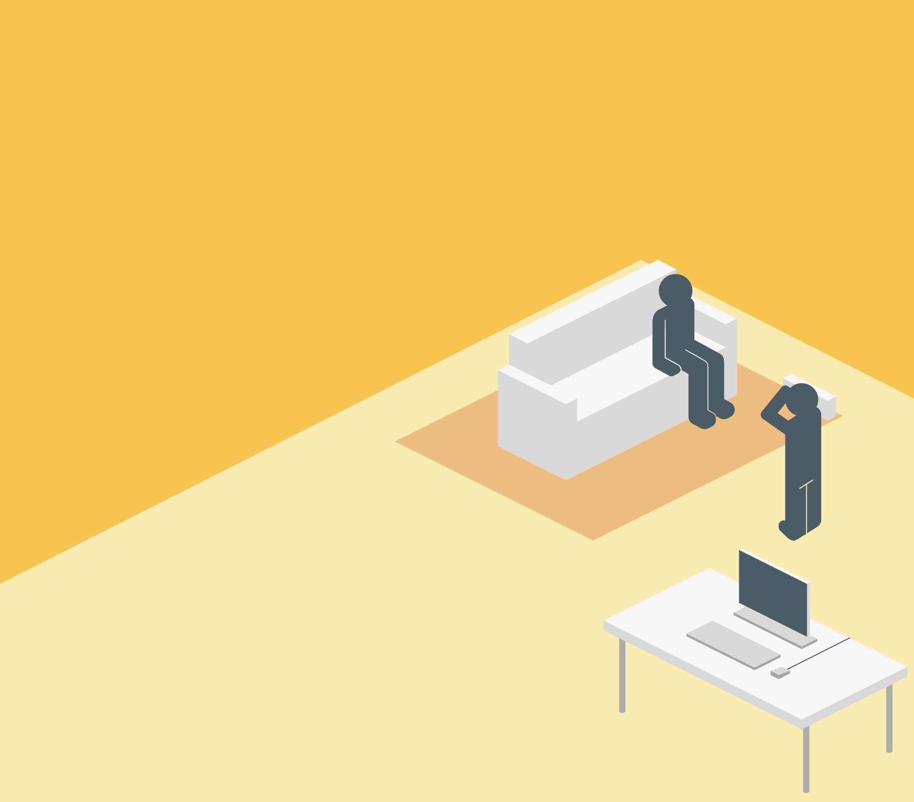

Medienproduktion
Lerne Technik um Filme, Audio und 3D-Artefakte herzustellen
Tauche in die technisch-kreative Welt der Medienproduktion ein. Hier wird dir beigebracht, wie man professionelle Audio-und Videoclips für Live-Broadcasts, Youtube, und Social Media erstellt.

Außerdem lernst du auch, was alles benötigt wird, um 3D Figuren herzustellen, vom ersten Vertex, über das Lichtsystem, bis hin zur vollständigen Animation, welche in Werbung, Filmen oder auch Spielen benutzt werden können.

Ob spannende Storylines, beeindruckende visuelle Effekte, oder atemberaubende Animationen, hier in der Medieninformatik lernt ihr eure Ideen mithilfe von innovativer Technologie in die Tat umzusetzen!
Schwerpunkt Module
Studiotechnik und -produktion
Licht, Kamera, ACTION! Hier lernt ihr, wie man einen Live-Broadcast erstellt, also wie man professionell ein Video mit Ton aufnimmt und sauber zusammengenäht in das Internet überträgt. Dabei nutzt ihr alles Wissen, was ihr bereits über die audio-visuelle Artefaktenerstellung gelernt habt und werdet als professionelle Filmcrew unseren @campus Livestream erstellen.

Grafische Datenverarbeitung: Animation
Hier lernst du die technischen Verfahren, wie ein Computer ein 3D-Objekt nimmt und dieses transformiert, um am Ende eine fließende Bewegung darzustellen. Das bleibt aber natürlich nicht nur theoretisch, denn du wirst auch eine Animation ganz alleine erstellen, vom ersten bis zum letzten Frame, und dabei ganz viel über Animationsindustriestandards und -prozesse erlernen.
Filmtechnik und -produktion
Das eine oder andere Video hast du bestimmt schon gedreht, aber hast du auch bereits ein ganzes Musikvideo erstellt? Denn genau das lernst du hier, du und deine Kommilitonen/innen/* werdet hier als Team den gesamten Prozess durchlaufen, von der Rollenverteilung über die Planung, zum Filmen und Musik aufnehmen, über das Editing und Colorgrading, bis ihr am Ende ein Musikvideo habt, auf das ihr stolz sein könnt!

Outside and Remote Technology and Production
Jedes gute Konzert hat auch seine technische Crew, die sicherstellt, dass alles sauber läuft. Wie ihr Wind und Wetter zum trotz eine Aufnahme gestaltet, lernt ihr hier, denn kein Studio ist für euch bestimmt kein Problem mehr.

3D-Spieleentwicklung
Ihr wisst wie man 3D-Objekte modelliert, wie man sie shaded, und sogar wie man sie dann auch noch animiert. Was nun? Interaktion. Denn hier lernt ihr kennen, wie ihr diese Modelle interaktiv macht, indem ihr sie in eine Game Engine eingebaut und wie man sie von dort aus kontrolliert.